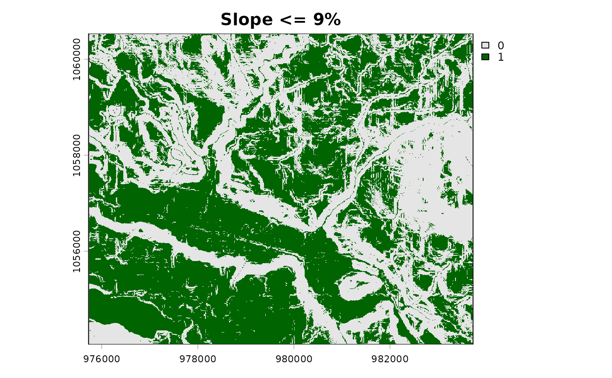

Applies a comparison operator and threshold to a raster, returning a binary (0/1) mask. Useful for slope masks, elevation masks, depth masks, etc.
Value
A SpatRaster with values 1 (condition met) and 0 (condition
not met). NA cells in x remain NA.
Examples
slope <- terra::rast(system.file("testdata/slope.tif", package = "flooded"))
gentle <- fl_mask(slope, threshold = 9, operator = "<=")
terra::plot(gentle, col = c("grey90", "darkgreen"), main = "Slope <= 9%")
